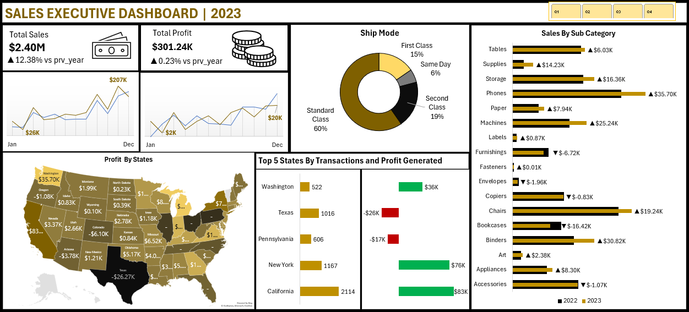
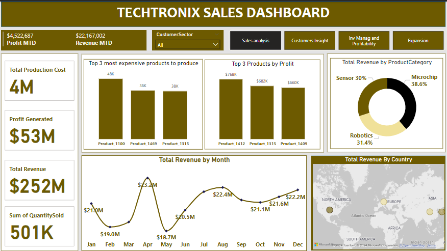
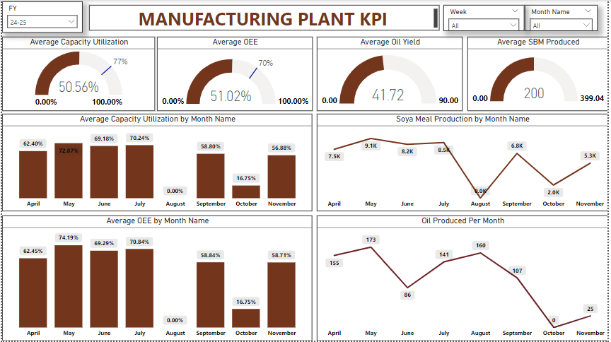
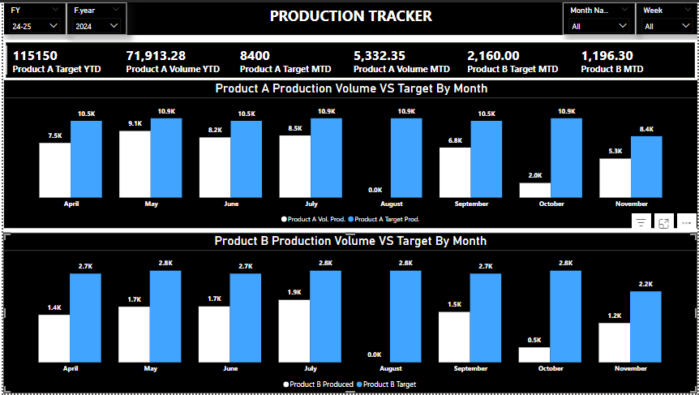
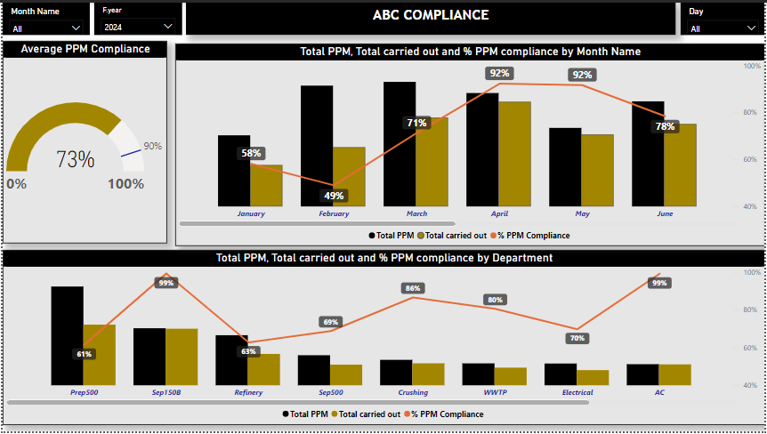
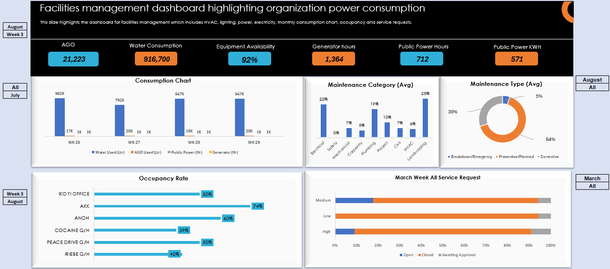
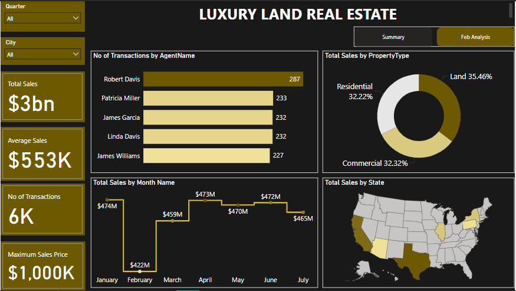

A comprehensive
dashboard for Smart Insights Co that provides a
detailed view of sales
performance
for the last 2 years This dashboard will help
track sales and profit s It will also feature a geographical
distribution of sales, enabling the organization to make
informed regional and product based strategies.
This analysis was
performed using Microsoft Excel.


Techtronix Innovations, a forefront player in the microchip and robotics industry,
is encountering challenges in streamlining its sales strategies,
optimizing production planning, and pursuing market expansion.

This dynamic Power BI dashboard offers a clear overview
of a manufacturing plant key performance Indicators (KPI), The report highlights 4
major areas : Capacity Utilization,
OEE, Yield %, and Production Volume to
support data-driven decisions.

This dynamic Power BI dashboard provides a clear
overview of production performance, focusing on
key metrics: Product A and Product B targets
vs actual volumes. It highlights monthly trends and YTD progress,
supporting data-driven decisions to meet production goals.

This dynamic Power BI dashboard provides a clear
overview of PPM compliance performance. It highlights
average compliance, monthly trends, and departmental
performance, showcasing total PPM, carried-out tasks,
and compliance percentages to support data-driven
maintenance decisions.

The facilities management dashboard highlights
power consumption metrics, including AGO usage,
water consumption, and equipment availability.
Key insights include 64% preventive maintenance,
occupancy rates up to 74%, and service requests distribution
across priority levels, ensuring efficient resource management
and optimized facility operations.

The luxury land real estate dashboard provides an overview
of sales performance, highlighting transaction trends,
property types, and regional insights. With key metrics
displayed clearly, it offers a concise snapshot of top agents,
monthly sales, and market distribution.